日本語を使うためには，ログイン時に日本語の入力方法 (Input Methid: IM) を指定する必要があります．この講義では，日本語の入力に かんな と kinput2 というシステムを組み合わせて使います．kinput2 がキーボードから入力されたカナやローマ字を受け取り，それを かんな に送って漢字に変換します．
まず，日本語を入力するアプリケーション（ウィンドウ）を選択します．ここでは試しに GNOME 端末を使ってみましょう．
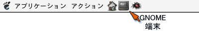
ウィンドウが現れて，その中にプロンプトが表示されたら，[Shift] キーを押しながらスペースバーをタイプするか，[半角/全角] キーをタイプしてください．
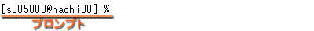
すると，どこかに という小さなウィンドウが現れます．これで日本語入力のモードに切り替わります．
という小さなウィンドウが現れます．これで日本語入力のモードに切り替わります．
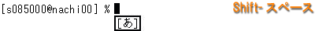
そのままローマ字でタイプすると，それがひらがなになって入力されます．
スペースバーをタイプすると，入力したひらがなが漢字かな混じり文に変換されます．
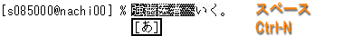
上の例では「強-歯医者へ」でひとつの文節になっています．これを短くするには，Ctrl-I をタイプ([Ctrl] を押しながら I をタイプ）するか，[Shift]を押しながら←（左矢印）キーをタイプします．文節を伸ばすには Ctrl-O をタイプするか，[Shift]を押しながら→（右矢印）キーをタイプします．
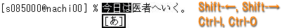
変換対象の文節を右に移動するには Ctrl-F をタイプするか，→（右矢印）をタイプします．左に移動するには Ctrl-B をタイプするか，←（左矢印）をタイプします．
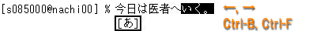
次の変換候補を呼び出すにはスペースバーあるいは Ctrl-N あるいは↓（下矢印），前の候補を呼び出すにはCtrl-P あるいは↑(上矢印）をタイプします．なお，カタカナに変換するにはファンクションキーのF7，ひらがなに戻すにはF8を使います．
Ctrl-M か Ctrl-l か [Enter] をタイプすれば，変換結果が確定します．
再度，[Shift]キーを押しながらスペースバーをタイプするか，[半角/全角] キーをタイプすれば，日本語入力のモードから抜け出ます．
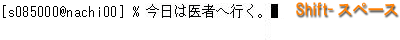
インターネットの代名詞でもある WWW (World Wide Web) を 参照するソフトウェアを「Web ブラウザ」と言います． これには Windows に組み込まれている Internet Explorer が最もよく使われていますが，Linux 用の Internet Explorer は（今のところ）ありません．代わりに Linux 上では，Internet Explorer 以前に広く普及し現在のインターネットブームを起こした立役者でもあった Netscape （開発終了）をはじめ，Netscape をもとにオープンソースで開発された Mozilla （開発終了，後継は SeaMonkey），GNOME 標準で Mozilla をベースにしたタブブラウザ Galeon，KDE上で開発されている Konqueror，Google の chrome （Linux 版は開発中），Opera，テキストベースの lynx や w3m，テキストエディタ Emacs の中で動く w3，それにファイルマネージャである Nautilus など，さまざまなものがあります．この講義では Mozilla から派生した Firefox を使うことにします．
画面左上の「アプリケーション」から「インターネット」→「FireFox ウェブブラウザ」の順に選んでください．Firefox が起動します．
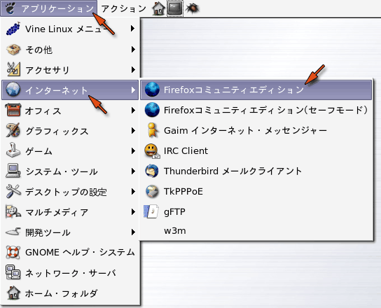
Firefox を使うにあたり，いくつか初期設定を行っておく必要があります（以下の設定は，Windows 側では既に設定されています）．まず最初に，メニューバーの「編集」メニューから「設定」を選んでください．
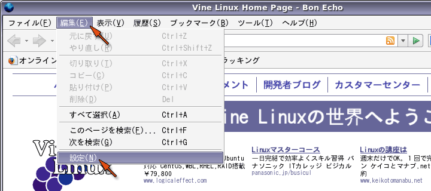
「Firefox の設定」のウィンドウで「一般」のアイコンをクリックしてください．
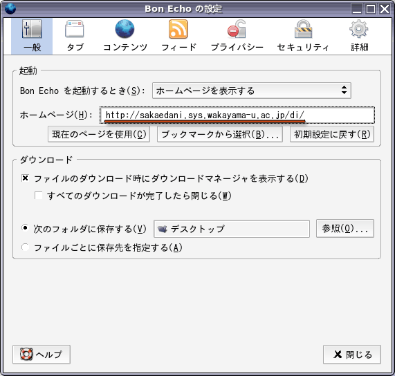
上の例では「場所」の欄に以下の内容（学科ポータルサイトの URL）を設定しています．URL とは Universal Resouce Locator の略で，Web ページの位置を表します．学科ポータルサイトでは，デザイン情報学科の学生向けに授業や演習，学生生活，卒業研究，および進路に関する様々な情報を提供しています．
| 学科ポータルサイト URL |
|---|
| http://sakaedani.sys.wakayama-u.ac.jp/di/ |
なお，和歌山大学自体のホームページは次の URL になります．
| 和歌山大学ホームページ URL |
|---|
| http://www.wakayama-u.ac.jp/ |
URLとURIWeb ページの住所は一般的に URL と呼ばれますが，現在ではより広義の URI (Universal Resource Identifier) という呼び方が用いられています．なお「ホームページアドレス」などという言い方は，ちょっと恥ずかしい感じがします．
学科ポータルサイトの URL を設定したら，次に「詳細」のアイコンをクリックし，次に「ネットワーク」のタブをクリックした後，枠の中にある「接続設定」のボタンをクリックしてください．
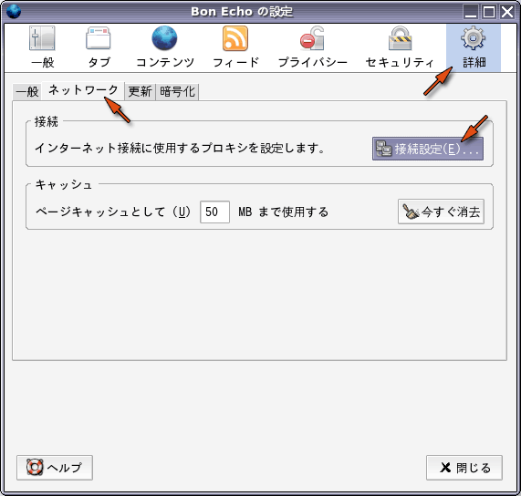
「インターネット接続」のウィンドウで「自動プロキシ設定スクリプト URL」を選択してください．
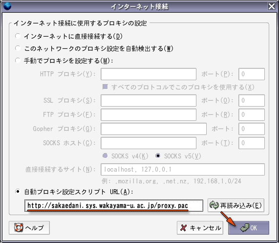
「自動プロキシ設定スクリプト」の下の欄に，以下の内容を設定してください．
| 自動プロキシ設定 URL |
|---|
| http://sakaedani.sys.wakayama-u.ac.jp/proxy.pac |
最後に OK をクリックしてください．
プロキシサーバについてWeb ブラウザ（クライアント）が Web サーバに対して見たい Web ページを要求すれば，Web サーバはそのページのデータを Web ブラウザに送信します．上記の設定は，この閲覧要求を相手の Web サーバに直接送る代わりに別のプロキシ (Proxy, 代理) サーバに送り，Web サーバとのやり取りを中継してもらいます．和歌山大学のプロキシサーバには，複数のコンピュータから同じサーバにアクセスがあったときにデータを共有するキャッシュサーバの機能と，Webページを通じて悪意のあるプログラム等が侵入することを防ぐ機能を提供しています．

設定のウィンドウを閉じてください．
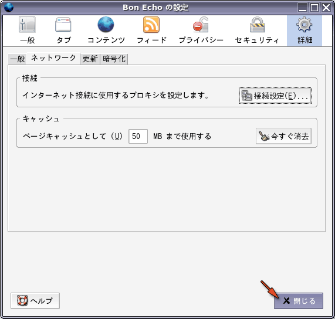
和歌山大学のホームページを開いてみましょう（もしかしたら既に「ホーム」に設定されているかもしれません）．メニューバーのファイルメニューから「URL を開く」を選ぶか，Ctrl-L をタイプしてください．
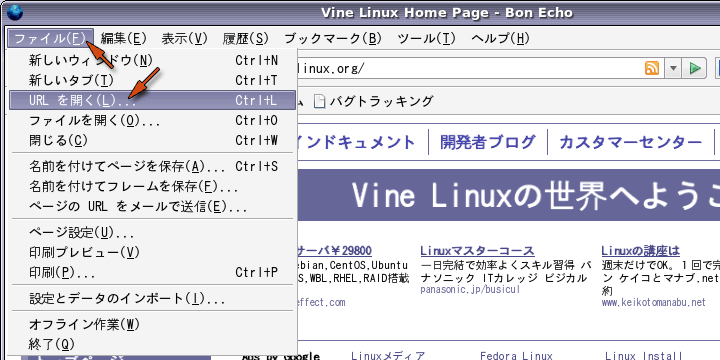
すると次のようなウィンドウが現れますので，そこに以下の URL（この講義の資料がある場所）を指定して「開く」をクリックしてください．
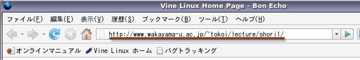
和歌山大学のホームページを開くには，ここに次の URL を打ち込んで [Enter] をタイプしてください．この講義は，今後この Web ページを使って進めます．
| 講義資料 URL |
|---|
| http://www.wakayama-u.ac.jp/~tokoi/lecture/shori1/ |
この URL の中の "~"（チルダ）を入力するには，[Shift] を押しながら [Backspace] の左側にある "0" のキーあるいは "^" のキーをタイプしてください．

"~"（チルダ）の字形について"~"（チルダ）は画面表示に使う字体（フォント）によって， 上の方にあったり，波線だったり，直線だったりしますが， 字形が異なるだけですから気にしないで下さい．
ブックマークは， よく参照するページを覚えておく機能です．現在，この講義の Web ページが表示されていると思いますから，これをブックマークに登録しておいてください．メニューの「ブックマーク」から「このページをブックマーク．．．」を選ぶか，Ctrl-D をタイプしてください
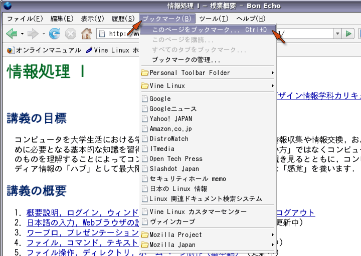
現在見ているページをブックマークに登録するかどうか確認するウィンドウが出ますので，「追加」をクリックしてください．
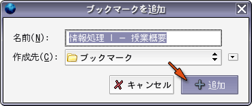
これ以降メニューのブックマークをクリックすると， 登録されている Web ページの一覧の中に，現在表示しているページが追加されます．以降はこれを選ぶだけで， すぐこのページを表示することができます．
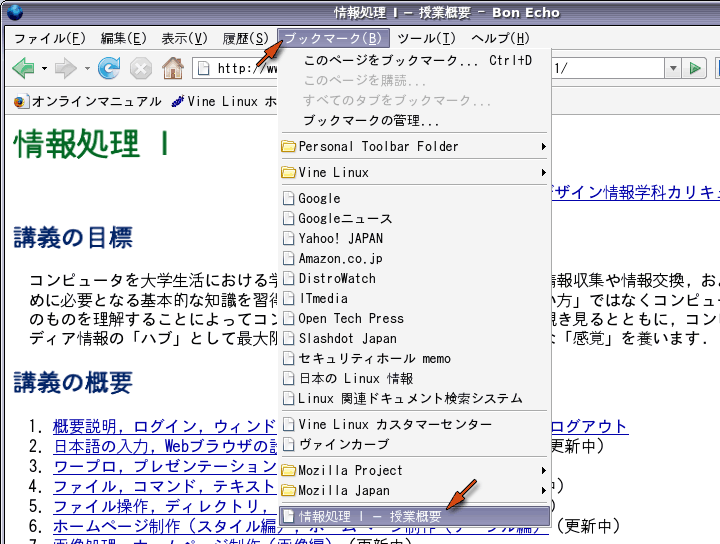
すでにいくつかのブックマークが登録されていますが，日本からでは使いようのないものも結構あるので，必要に応じて自分で整理してください．「ブックマークの管理 Ctrl+B」を選ぶか Ctrl-B をタイプすれば， ブックマークの管理ウィンドウが現れます．
自分の見たいページを探すには，サーチエンジンと呼ばれる Web ページを利用します． インターネット上には多くのサーチエンジンがありますが，これらはおおまかに次の２つのタイプに分類することができます．
ディレクトリ型は人手によって整理されているために，無駄な情報が少なく興味のあるカテゴリのページを見つけやすいという特徴がありますが，その分，漏れや更新の遅れが大きいと考えられます．
全文検索型は Web ページに含まれるキーワードを機械的に抜き出してデータベースを構築するので，漏れが少なく更新も早いと考えられますが，検索結果の中からすばやく本当に必要な情報を見つけるには多少の経験が必要です．
最近は全文検索型が主流になっていますが，上記のものを含むほとんどのところで，ディレクトリ型と全文検索型の両方の機能を持たせています．また複数のサーチエンジンを横断して検索できる「メタサーチ」と呼ばれるものもありますが，ここでは割愛します．これらのほかに，学術論文を対象にした Google Scholar や arXiv.org，音楽専門サーチエンジン，図書館の蔵書を検索するカーリルのようにターゲットを絞ったものとか，人力検索サイト「はてな」，意思決定エンジン Hunch など，多様なものがあります．Wolfram|Alpha はなんでも「計算」で答を出してくれる，とても興味深い知能エンジンです．微分・積分のような記号計算もできます．
Firefox を終了するには，「ファイル」メニューから「終了」を選んでください．タイトルバーの右上の×印（閉じる）でも構いません．
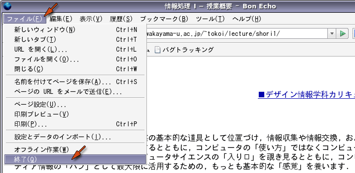
この講義では，電子メールの読み書きするのに，Thunderbird というアプリケーションを使います．画面左上の「アプリケーション」から「インターネット」→「Thunderbird」の順に選んでください．Thunderbird が起動します．
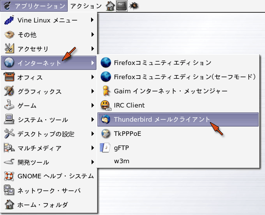
皆さんが和歌山大学において（和歌山大学のメールアドレスを用いて）メールをやり取りするためのパソコンの設定は，システム情報学センターの Configuration for mail clients using CIS servers という Web ページで解説されています．ここでは Tunderbird でのメールのアカウント設定について解説します．
皆さんの Thunderbird には，既にメールの設定がされていますが，これはシステム工学部のメールサーバを使う設定なので，これをシステム情報学センターを使うように変更します．Thunderbird が起動すると最初にパスワードを聞いてきますが，ここでは一旦それをキャンセルしてください．
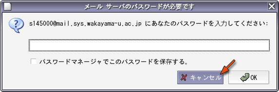
次に，「フォルダ」のところの「アカウント名」を選択して，「このアカウントの設定を表示する」をクリックしてください．
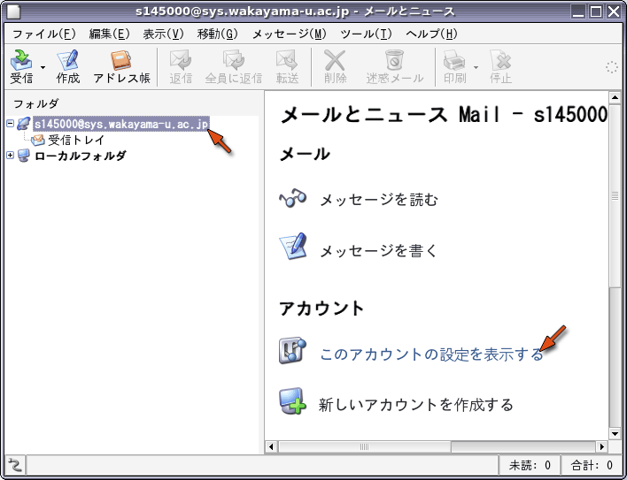
アカウント情報を設定します．左側の枠のアカウント名（一番上）を選択してください．そして「アカウント名」のところの「sys」を「center」に変更し，「名前」のところに自分の名前を設定してください（ローマ字推奨）．またメールアドレスの「sys」を「center」に変更してください．最後に「組織」のところに「Wakayama University」を設定してください．
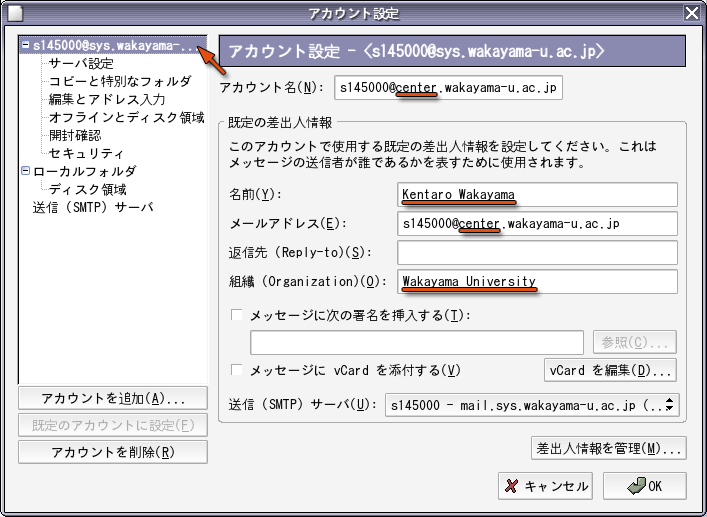
皆さんのメールアドレスは，（利用承認書に書かれている）ユーザ名@center.wakayama-u.ac.jp です．ユーザ名が s145000 なら，メールアドレスは以下のようになります．
| 自分のメールアドレスの例（利用承認書を確認してください） |
|---|
| s145000@center.wakayama-u.ac.jp |
使用するメールサーバの設定をします．左側の枠の「サーバ設定」を選んでください．既にサーバの種類として「IMAP メールサーバ」が選ばれていると思います．その下にある「サーバ名」の「sys」を「center」に変更してください．また「ユーザ名」が自分のユーザ名になっているか確認してください．その後，「セキュリティ設定」の枠の中の「保護された接続 (SSL, TLS) を使用する」のところから，「SSL を使用する」を選択してください．
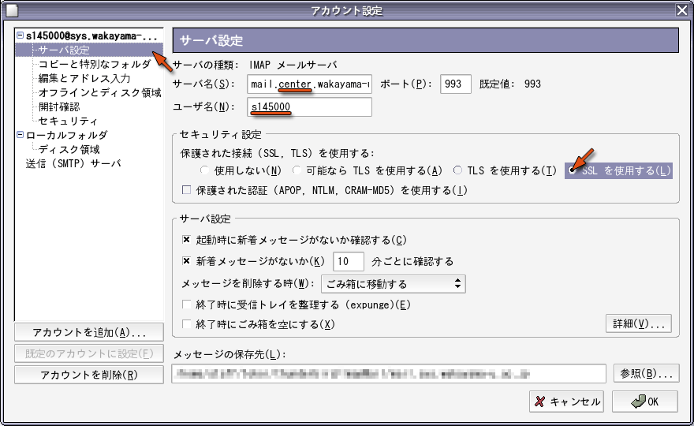
皆さんは mail.center.wakayama-u.ac.jp というメールサーバを使います．学外から大学宛に届いたメールを読む際には，IMAP のアカウントを作成し，メールサーバにこれを設定してください．
| システム情報学センターメールサーバ |
|---|
| mail.center.wakayama-u.ac.jp |
メールサーバからメールを読み出す方法には，IMAP の他に POP というものもあります．多くのプロバイダが POP を使用していると思いますが，和歌山大学ではいろんなところからメールを読み出せるように，IMAP を使うようにしています．
POP (Post Office Protocol) はメールサーバからメールを取り出す機能だけを提供しますが，IMAP (Internet Message Access Protocol) はメールサーバにメールを戻したり整理したりするする機能も提供します．したがって，POPでは読んだメールをクライアント（パソコン）側に取り込んで管理しますが，IMAPではメールサーバ上に置いたまま管理することができます．このため，複数のパソコンで同じメールアカウントを使用した場合，POPでは読んだメールがそれらのパソコンに分散して保存されてしまいます．これに対してIMAPでは，どのパソコンからも同じ内容の「受信箱」が利用できます．
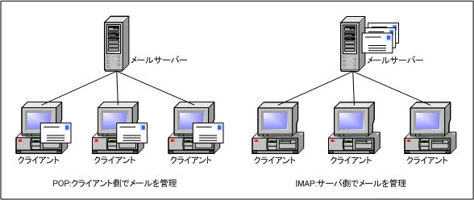
SSL についてメールを読み込むためには，メールサーバとの間でユーザ名とパスワードやメールの本文などの通信データをやりとりする必要があります．しかし Thunderbird の初期設定では，この通信データを暗号化していません．そうすると，ネットワークに流れる通信データを覗き見ることにより，第３者がパスワードを知ることができてしまいます．SSL は通信データを暗号化する機能で，これを用いればパスワードを他人に知られないようにすることができます．
左の枠の「編集とアドレス入力」を選んでください．「編集」のところの「HTML 形式でメッセージを編集する」にチェックが入っていたら，チェックをはずしてください．
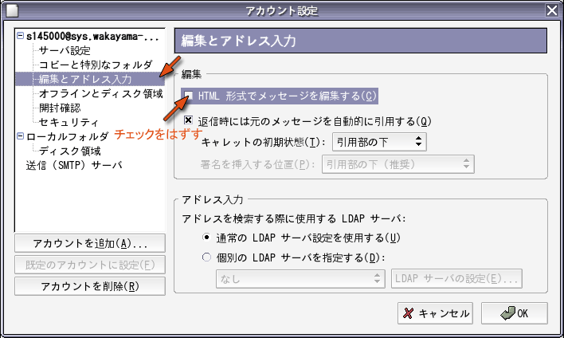
HTML形式のメッセージについてThunderbird ではホームページなどで用いられるHTML (Hypter Text Markup Language) を使ってメールを作成することができます．しかし，メールの受信者が使っているメールソフトによっては，この形式のメールを読めない場合があります．また，携帯電話などでも対応できない場合があるようです．仮に相手がこの形式のメールが読める場合でも，人によってはあまり喜ばれない場合もあります．そこで，相手のメール環境がわからない場合には，HTML形式のメールを送らないのがマナーだと考えます．
メールの送信に使うサーバを変更します．左の枠の一番下にある「送信 (SMTP) サーバ」を選択してください．次に，右側の「追加」をクリックしてください．
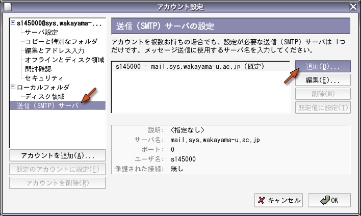
「設定」のところの「サーバ名」に「mail.center.wakayama-u.ac.jp」を設定してください．また，「セキュリティと認証」のところの「ユーザ名とパスワードを使用する」にチェックが入っていたら，チェックをはずしてください．「保護された接続を使用する」は「いいえ」で構いません（「SSL」でも問題ありません）．最後に「OK」をクリックしてください．
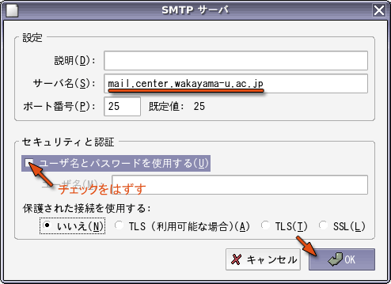
「mail.center.wakayama-u.ac.jp」を選択し，「規定値に設定」をクリックしてください．
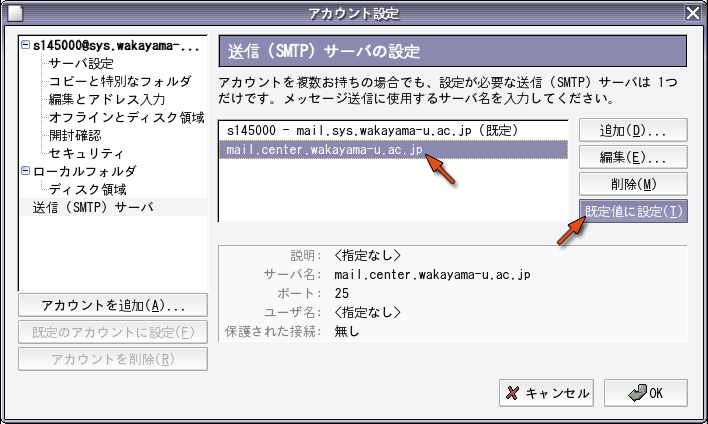
「（ユーザ名） - mail.sys.wakayama-u.ac.jp」を選択し，「削除」をクリックしてください．
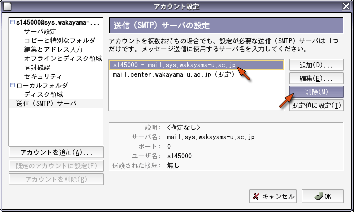
サーバの削除を確認するウィンドウが現れますから，「はい」をクリックしてください．
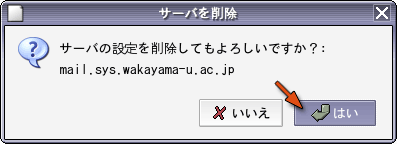
最後に「OK」をクリックしてください．
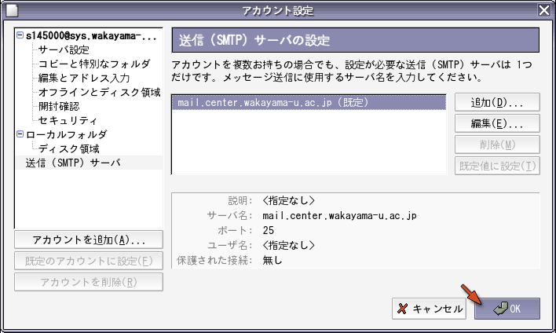
「受信トレイ」を選択してください．
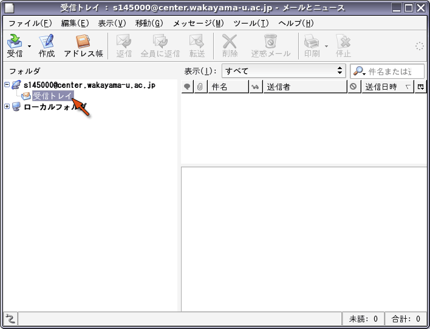
「受信トレイ」を選択すると，そのアカウントへの接続を行います．その際「パスワード」が必要になりますので，利用承認書のパスワードを設定してください．ついでに，メールを読むたびにパスワードを入力するのが面倒なら，「パスワードマネージャでこのパスワードを保存する」にチェックを入れておいてください．
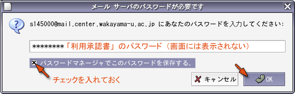
「OK」をクリックすると，「パスワードマネージャ」に関する注意書きが現れます．一通り目を通したら，「OK」をクリックしてください．
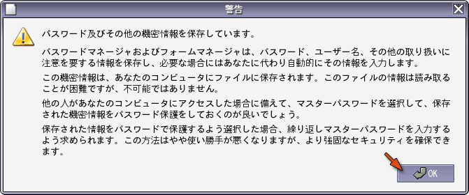
メールの設定が完了したら，自分宛にメールを書いてみて，ちゃんと届くかどうか確認してみてください．ウィンドウの上方にあるアイコンの列（ツールバー）の中の「作成」をクリックするか，「メッセージを書く」をクリックしてください
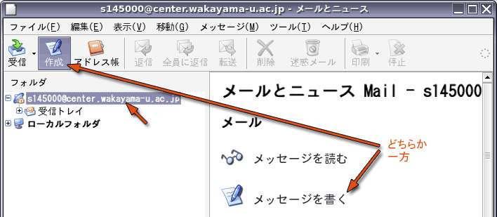
メールの作成ウィンドウが開きますから，「宛先」に自分のメールアドレスを指定し，「件名」や本文に適当な文章を書いて，最後に「送信」をクリックしてください．[TAB] キーをタイプすれば，欄を移動できます．
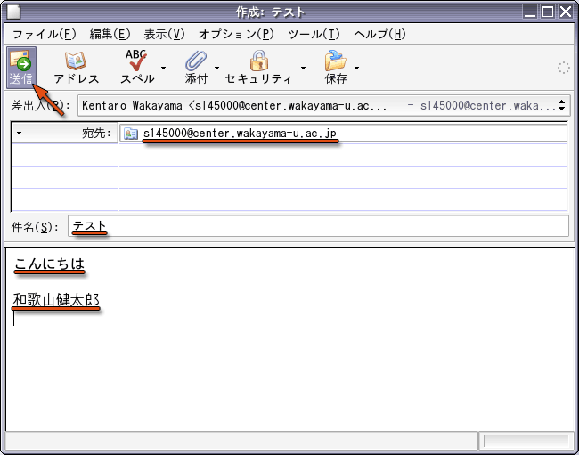
ウィンドウの上方にあるアイコンの列（ツールバー）の中の「受信」をクリックするか，「メッセージを読む」あるいは「受信トレイ」をクリックしてください．
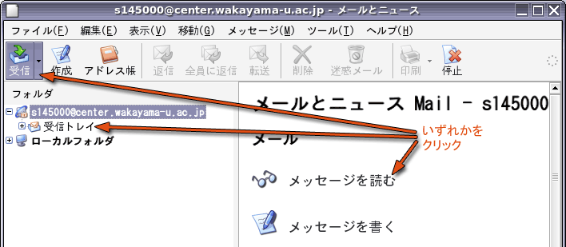
自分宛のメールが届いていたでしょうか？もし何も届いていなかったり，MAILER-DAEMON からメールが届いていたりした場合は，何か設定に問題があります．その場合はもう一度設定を確かめてください．原因がわからなければ質問してください．
MAILER-DAEMON からのメール出したメールが宛先の間違いや何らかのトラブルで相手に届けられなかったときは，MAILER-DAEMON からメールが送り返されてきます．これはコンピュータが自動的に発送するメールなので，このメールには返事を書かないでください．
自分宛のメールを読むことができれば，今度は担当教員 tokoi@sys.wakayama-u.ac.jp 宛てに何かメッセージを書いてください（たとえば，好きなものを一つ教えてください）．届いたメールにはごく簡単に返事を書きます．
注意事項ネチケット
人と人とがメールや Web，チャットなんかでつながった「ネットワークコミュニティ」を，実社会とは別の「仮想世界」のように感じてしまうかもしれません．しかし実際にはそこは，普通の社会の一つの断面に過ぎません．そこでの振舞いには，実社会と同じモラルやマナーが求められます．ただ，媒体として通信ネットワークが介在するために，さらにネットワークコミュニティ特有の配慮も必要になります．ネットワークコミュニティにおけるこのようなエチケットのことを「ネチケット」と呼んでいます．ネチケットについては，下記に優れたなリンク集があります．あなたの目の前のコンピュータの向こう側にも， 「人」がいるんだと言うことを忘れないでください．セキュリティ
インターネットの世界の中にある「悪意」から自分自身を守るには，いくつか知っておかなければならない事項があります．メールに関しては，添付ファイルは中身が確認できなければ絶対開かないことを肝に銘じておいてください．添付ファイルでなくてもチェーンメール（「不幸の手紙」みたいなもの）やネズミ講の勧誘，犯罪を誘発しそうな Web サイトへの誘いなど，さまざまな「悪意」が送りつけられてきます．嫌な言い方ですが，「他人の言うことは，とりあえず信用しない」ことを基本姿勢にすることが，そういう悪意から身を守る第一歩でしょう．
Thunderbird を終了するには，「ファイル」メニューから「終了」を選んでください．タイトルバーの右上の×印（閉じる）でも構いません．
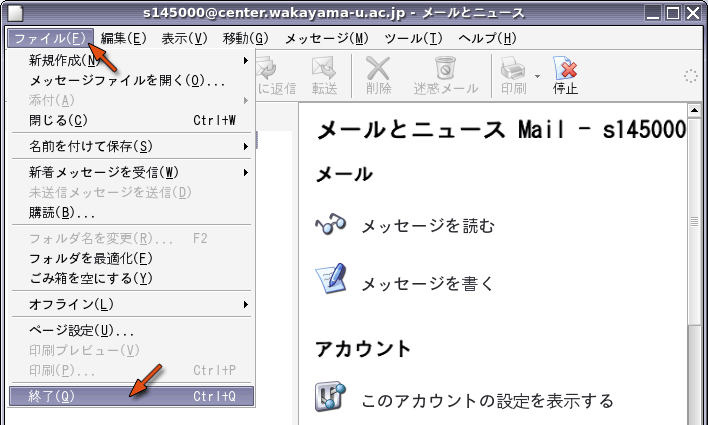
大学宛のメールは，Web ブラウザを使って読み書きすることもできます（Web メールサービス）．これを利用するには，ActiveMail のページを開き，利用承認書のユーザ名とパスワードを入力してログインしてください．なお，PDA（iPod touch 等を含む）や携帯電話などの機能が制限された Web ブラウザを使う場合は，SquirrelMail を使用してください（こちらは正式なサービスではないので，予告無くサービスを停止する場合があります）．
パスワードの変更やメールの転送設定についての説明をここに用意しています（このページは学外から参照できません）．
システム工学部広報活動改善のための新入生アンケートを行っています．協力をお願いします．4月27日（月）23時59分までに回答をお願いします．下記のページ（リンクになっています）から「学生の方はこちら」をクリックし，ログインした後，アンケートのアイコンをクリックしてください．
| アンケートページの URL |
|---|
| https://wlcampus.center.wakayama-u.ac.jp/portalUI/html/start.htm |
次のキーワードに関する情報を Web を利用して調べ，簡単に説明してください．なお，それぞれ情報源とした Web ページの URL も示してください．
情報が見つからないキーワードの解答は省略して構いません．解答は次週の水曜日までにメールでtokoi@sys.wakayama-u.ac.jp に送ってください．
自宅等学外からの課題メール送信について今回の課題は大学の設備を使ってメールを出せるかどうかの確認も兼ねているので，自宅や携帯からメールを送ってもらってもあまり嬉しくありません．自宅等の環境も有効に活用して欲しいとは思うので学外からの課題メールも受け取りますが，その際にもメールの From: は，できれば大学のメールアドレスにしてください．そうしないと私がメールを受信する時に自動振り分けされないため，課題メールを見落としてしまう可能性があります．それから，HTML形式のメールもスパム（迷惑メール）と間違えて読まない可能性があるので気を付けてください．この講義では皆さんに「HTML形式のメールを送らない設定」をしていただいているので，問題ないと思います :-)